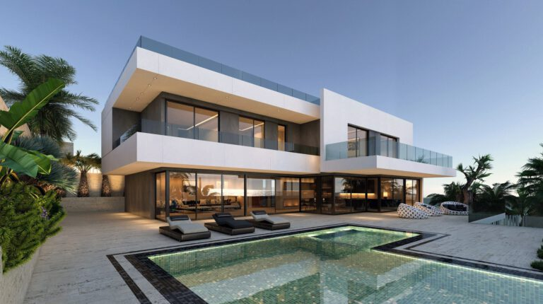
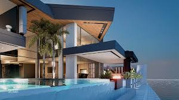
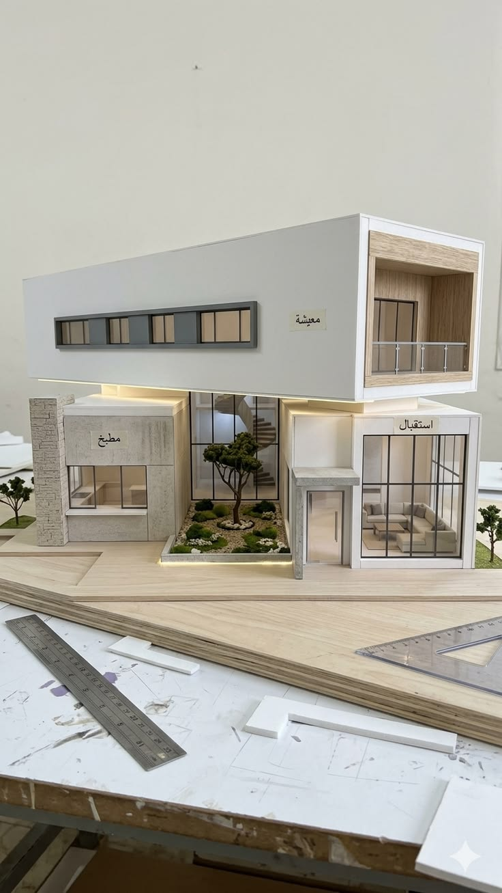
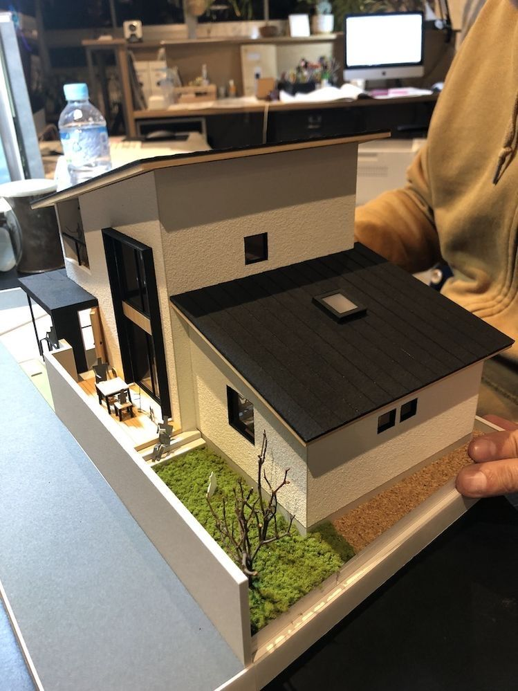
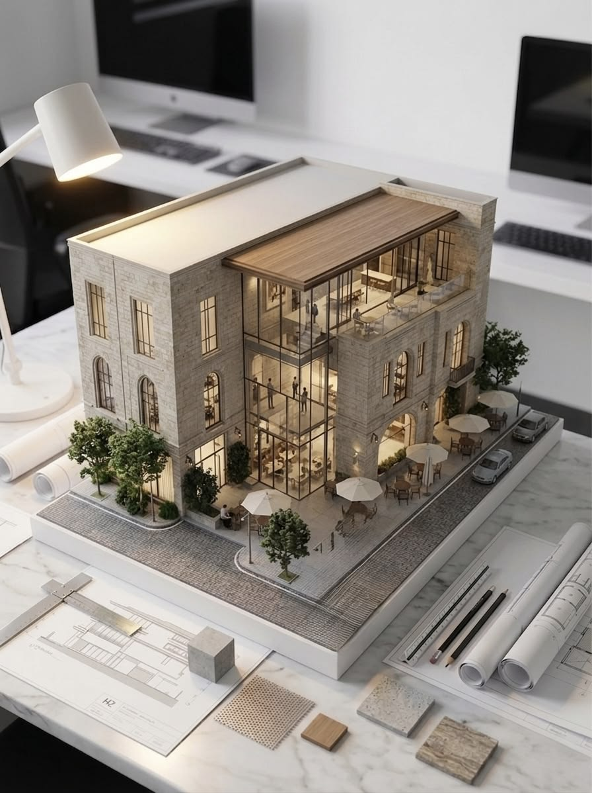

BIENVENIDO A NUESTRA PÁGINA!
GRACIAS POR UNIRTE A NUESTRA PAGINA!, si estás aquí es porque estás interesado en el empleo, a continuación te daremos un pequeño resumen y vistazo de lo que hace la empresa junto con trabajos hechos por nuestros trabajadores.

RAÍCES | Arquitectura & Desarrollo Social
Estudio de Diseño Arquitectónico y Construcción: Bienvenidos al espacio digital de Raíces. Somos una firma emergente de arquitectura comprometida con la excelencia técnica, la identidad local y el impacto social positivo a través del diseño de espacios.

¿Quiénes Somos?
Raíces nace de la necesidad de fusionar la arquitectura técnica de alta calidad con la sensibilidad humana. Creemos que la arquitectura no solo debe construir estructuras, sino transformar comunidades. Nos especializamos en el desarrollo de proyectos constructivos y de diseño arquitectónico integrales, combinando la vanguardia tecnológica con el respeto por el entorno técnico y cultural.

Pilares y Valores Institucionales:
Nuestra práctica profesional no solo se mide en planos y metros cuadrados, sino en la solidez de los valores que guían a nuestro equipo de trabajo: * Liderazgo Consciente: Guiamos cada proyecto con responsabilidad, anticipando el impacto ambiental, urbano y social de nuestras obras. * Sinceridad y Respeto Mutuo: Mantenemos una comunicación transparente y horizontal tanto dentro de nuestro equipo técnico como con los clientes y las comunidades. * Humildad: Escuchamos activamente las necesidades del entorno; entendemos que para diseñar un buen espacio, primero hay que entender a quien lo va a habitar. * Impacto y Amor: Impregnamos pasión en cada detalle técnico, motivados por el deseo genuino de generar bienestar.

Visión y Proyección Social:
El verdadero diferenciador de Raíces es nuestro enfoque en la arquitectura social. Nuestro objetivo a mediano y largo plazo está firmemente estructurado en dos vertientes: 1. Desarrollo de Vivienda Digna: Investigamos y proyectamos soluciones habitacionales accesibles y seguras para sectores de escasos recursos. Creemos que la vivienda digna es un derecho fundamental, y aplicamos optimización de materiales y sistemas constructivos eficientes para lograrlo. 2. Crecimiento Local: Proyectamos la consolidación de un equipo multidisciplinario altamente competente, con un enfoque inicial en la región de Antigua Guatemala, aprovechando su riqueza arquitectónica y respondiendo a los retos de conservación, normativas constructivas locales y diseño contemporáneo respetuoso.

Portafolio de Servicios Técnicos:
Para garantizar la viabilidad de nuestras propuestas, nos especializamos en las siguientes áreas técnicas: * Diseño Arquitectónico y Modelado: Desarrollo de propuestas espaciales estéticas, funcionales y optimizadas. * Dibujo Técnico y Planificación: Elaboración de planos constructivos detallados (plantas, secciones, fachadas) bajo normativas técnicas rigurosas. * Arquitectura Social y Sostenible: Consultoría e investigación para proyectos de urbanismo y vivienda comunitaria de bajo costo y alto impacto.
